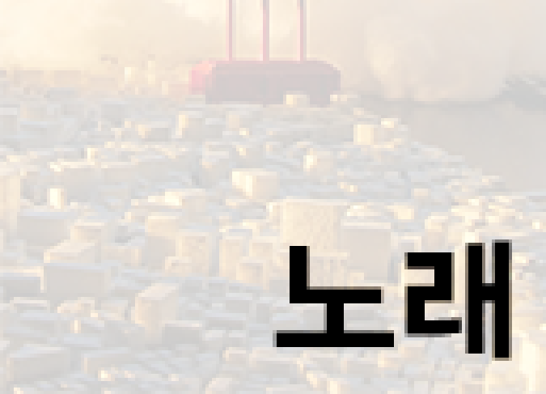

John Han

그림그리기
resistance / 2014 / 종이 위에 연필, 싸인펜, 마카 / 210*297 mm
어려서부터 그림 그리는 걸 좋아해서 계속 그려왔습니다. 그림은 소심하고 눈치를 보는 저에게 스트레스를 풀어주는 매개체이자 친구입니다. 그림을 그리고나면 항상 다음날 일어나자마자 전날 그렸던 그림을 바로 보고 만족하고 또 그동안 그렸던 그림들을 보면서 추억에 빠집니다. 저는 그림을 통해 제 주변의 일들을 풀어내고 있습니다.그리고 저는 나중에 세계적인 일러스트레이터이자 화가가 될 것 이기에, 그림은 제 취미중 가장 소중하다고 볼 수 있습니다. 페이스북 페이지도 운영중이고 페이지를 만든 계기는 그림페이지를 만들어두면 그림을 매일 그리거나 이틀에 한번꼴로 그리게 됩니다. 업로드를 안하면 페이지 속의 john han은 그날 아무것도 하지 않은게 되기 때문입니다.
축구하기
자랑좀 하겠습니다. 죄송합니다.. 축구하면 한주원 한주원하면 축구! 분당의 지배자 한주원입니다. 저는 초등학교때부터 축구를 줄곧해왔고 초등학교때는 월화수목금 4교시수업이 끝나면 항상 친구들과 함께 축구를 하는게 제 초등학교 일상의 전부였고 제일 즐거웠습니다. 얼마나 많이했냐면 점심에 시작해서 해질때까지 하고 밤에 또하러 나오고 이런 식으로 너무좋아하다보니 사설 축구부에도 가입 했었고 중학교올라갈때 다른학교에서 스카웃제의도 왔지만 부모님이 반대를 하여 못 하게 되었습니다. 중,고등학교때도 축구를 매일했고 성남시 풋살리그에서 우승하기도 했습니다. 군대에서도 축구로 유명했고 편하게 지냈습니다. 제대하고나니 축구할 기회가 많이없어 속상하고 계속 속상합니다. 한주원의 축구교실도 항상 진행 중이니 응원 부탁드립니다!쇼핑하기
쇼핑은 제 삶의 낙입니다. 물론 그림이랑 축구가 낙이 아니라는 건 아닙니다. 쇼핑은 옷이든 뭐든 나에게 투자하는 걸 말합니다. 쇼핑을 하다보면 눈이 돌아가서 뭐든 다사고싶은데 마음을 추스르고 고르다보면 행복에 감싸입니다. 제가 좋아하는 쇼핑 중 가장이 옷쇼핑인데 제가좋아하는 브랜드는 엄청나게 비싼 브랜드를 좋아하지만 마음을 추스러서 읊어보자면 유니클로나 자라입니다. 그래도 잘 건지면 정말 입기 좋고 오래 입을만한 옷들이많기에 좋아합니다.